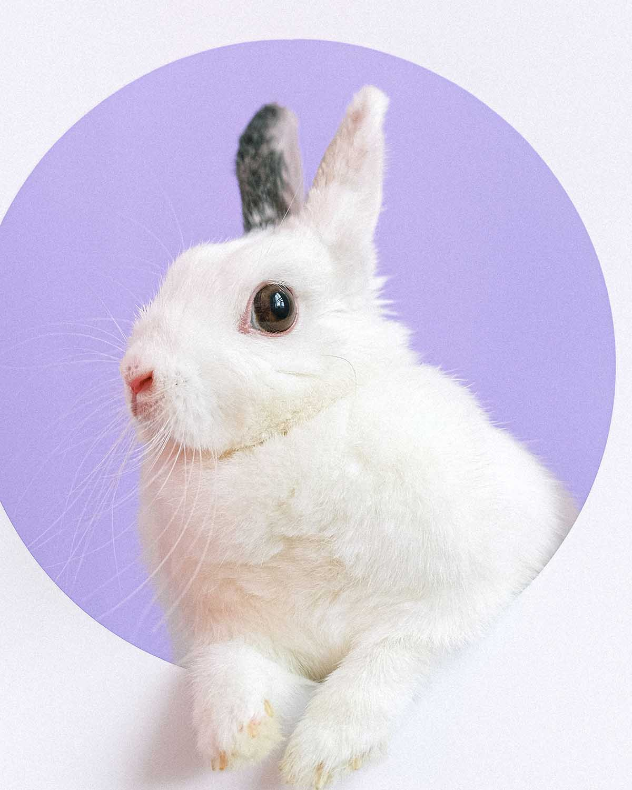

Title Of Page
-
Home
<About
Contact
Work
Main Content Title
The rabbit gestation period is short and ranges from 28 to 36 days with an average period of 31 days. A longer gestation period will generally yield a smaller litter while shorter gestation periods will give birth to a larger litter. The size of a single litter can range from four to 12 kits allowing a female to deliver up to 60 new kits a year. After birth, the female can become pregnant again as early as the next day.
The mortality rates of embryos are high in rabbits and can be due to infection, trauma, poor nutrition and environmental stress so a high fertility rate is necessary to counter this.
Secondary Content Title
-

-